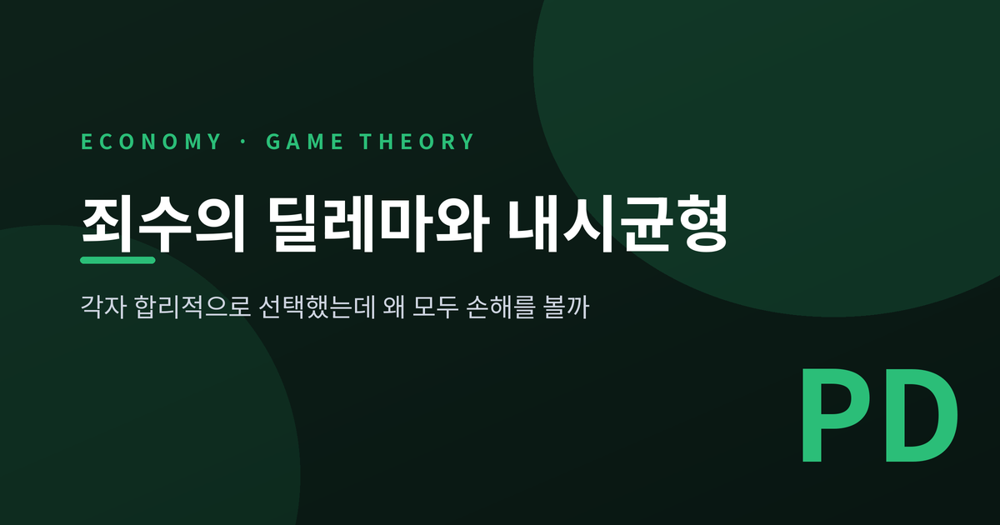
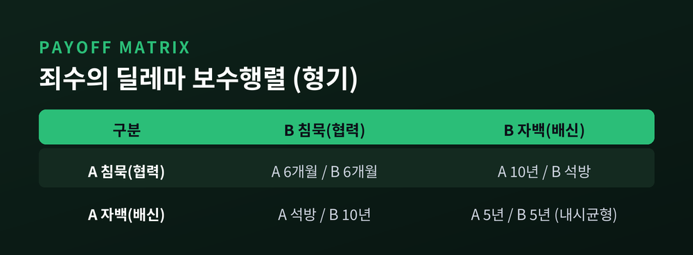
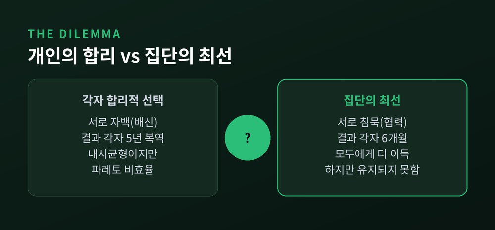
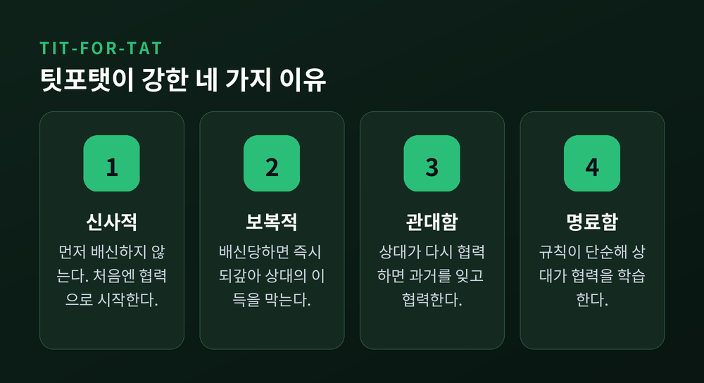
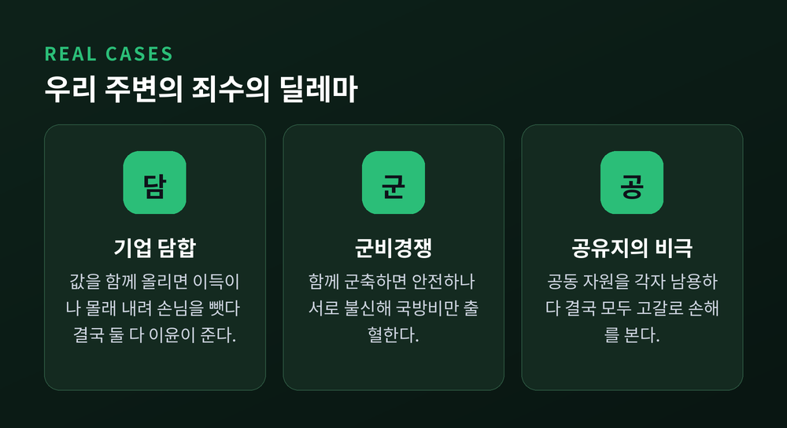

죄수의 딜레마와 내시균형, 각자 합리적인데 왜 모두 손해일까
두 사람이 저마다 가장 똑똑한 선택을 했습니다. 그런데 결과는 둘 다 손해입니다. 이 이상한 일을 설명하는 것이 게임이론의 '죄수의 딜레마'와 '내시균형'입니다. 오늘은 이 두 개념을 보수행렬 수치부터 현실 사례까지 차근히 풀어 보려 합니다.
먼저 결론부터 세 줄로 정리하겠습니다.
- 각자에게 가장 유리한 선택(우월전략)만 따라가면 (배신, 배신)에 갇힙니다. 이것이 내시균형입니다.
- 그 결과는 둘 다 협력했을 때보다 나쁩니다. 개인의 합리가 집단의 손해로 이어지는 파레토 비효율입니다.
- 하지만 게임이 반복되면, '팃포탯'과 '미래의 그림자'를 통해 협력이 되살아납니다.
■ 취조실의 두 용의자, 보수행렬로 보기
상황은 단순합니다. 두 용의자가 붙잡혀 서로 다른 방에서 심문을 받습니다. 말을 맞출 수 없습니다. 각자 '침묵'과 '자백' 중 하나만 고릅니다.
형벌 조건은 이렇습니다.
- 둘 다 침묵하면, 증거가 부족해 각자 6개월만 삽니다.
- 한 명만 자백하면, 자백한 사람은 즉시 풀려나고(0), 침묵한 사람은 10년을 삽니다.
- 둘 다 자백하면, 각자 5년을 삽니다.
이 조건을 한눈에 담은 것이 아래 보수행렬입니다.

숫자만 놓고 보면 답이 금방 보입니다. 문제는, 그 답이 두 사람을 함정으로 몰아넣는다는 점입니다.
■ 우월전략 — 상대가 뭘 하든 나는 자백이 이득
용의자 A의 머릿속을 따라가 보겠습니다.
상대 B가 침묵할 것 같다면, 나는 침묵하면 6개월, 자백하면 석방입니다. 자백이 낫습니다. 상대 B가 자백할 것 같다면, 나는 침묵하면 10년, 자백하면 5년입니다. 역시 자백이 낫습니다.
즉 B가 무엇을 하든 A에게는 언제나 자백이 유리합니다. 이렇게 상대의 선택과 무관하게 늘 더 나은 전략을 '우월전략'이라 부릅니다.
B의 처지도 A와 완전히 대칭입니다. B에게도 자백이 우월전략입니다. 두 사람 다 한 치의 실수 없이 합리적으로 계산했습니다. 그리고 나란히 자백을 택합니다.

■ 내시균형 — 아무도 혼자서는 벗어날 수 없는 상태
이렇게 도달한 (자백, 자백)이 바로 이 게임의 '내시균형'입니다.
내시균형은 이렇게 정의됩니다. 상대의 선택이 그대로일 때, 나 혼자 전략을 바꿔 봐야 이득이 없는 상태. 모두가 서로의 선택에 대해 최선의 대응을 하고 있는 지점입니다.
(자백, 자백)을 보겠습니다. 여기서 A가 혼자 침묵으로 바꾸면 5년이 10년으로 늘어납니다. 손해라 못 바꿉니다. B도 마찬가지입니다. 그래서 누구도 먼저 발을 빼지 않습니다. 균형입니다.
반대로 모두에게 이상적인 (침묵, 침묵)은 균형이 아닙니다. 여기서 A가 몰래 자백으로 돌아서면 6개월이 석방으로 바뀌기 때문입니다. 이탈할 유인이 남아 있으니 그 상태는 유지되지 못합니다.
이 개념을 세운 사람이 수학자 존 내시입니다. 그는 이 공로로 1994년 노벨 경제학상을 받았습니다. 그리고 모두에게 우월전략이 있으면, 그 조합은 반드시 내시균형이 됩니다. 죄수의 딜레마가 바로 그 교과서적 사례입니다.
■ 파레토 비효율 — 딜레마의 진짜 얼굴
여기서 딜레마의 정체가 드러납니다.
(자백, 자백)은 각자 5년입니다. (침묵, 침묵)은 각자 6개월입니다. 침묵 쪽으로 옮기면 두 사람 모두 형기가 줄어듭니다. 손해 보는 사람이 없습니다. 그런데도 두 사람은 5년짜리 결말에 갇혀 있습니다.
누군가를 나쁘게 만들지 않고도 모두를 더 좋게 만들 수 있는데, 그렇게 못 하는 상태. 이것을 '파레토 비효율'이라 합니다.
예전에는 각자 이기심을 좇으면 '보이지 않는 손'이 모두를 이롭게 한다고 믿었습니다. 지금 이 게임은 정반대를 보여줍니다. 각자의 합리가 모두의 손해로 굳어집니다. 개인의 최선과 집단의 최선이 어긋나는 것, 그 틈이 곧 딜레마입니다.
■ 반복되면 달라진다 — 팃포탯과 미래의 그림자
여기까지는 딱 한 번 만나고 헤어지는 게임의 이야기입니다. 현실의 관계는 대개 한 번으로 끝나지 않습니다. 같은 상대를 내일 또 만납니다.
이 '미래의 그림자'가 판을 바꿉니다. 오늘 배신하면 내일 보복당합니다. 관계가 길게 이어질수록 배신의 대가는 커집니다.
이를 실험으로 증명한 사람이 정치학자 로버트 액설로드입니다. 그는 1979년, 죄수의 딜레마를 반복하는 컴퓨터 프로그램들을 서로 겨루게 하는 대회를 열었습니다. 전문가들이 온갖 정교한 전략을 냈습니다. 우승은 가장 단순한 전략에게 돌아갔습니다.
이름은 '팃포탯(Tit-for-Tat)'입니다. 규칙은 두 줄이면 끝납니다. 처음엔 무조건 협력한다. 그다음부터는 상대가 직전에 한 그대로 따라 한다. 상대가 협력하면 나도 협력, 배신하면 나도 배신입니다.
우승 비결이 공개된 뒤 열린 2차 대회에서도, 팃포탯은 또 우승했습니다.

팃포탯이 강한 이유는 네 가지로 정리됩니다. 먼저 배신하지 않는 신사적인 태도, 당하면 곧바로 되갚는 단호함, 상대가 돌아오면 용서하는 관대함, 그리고 누구나 규칙을 알아챌 만큼 명료하다는 점입니다.
다만 한계도 분명합니다. 게임이 '언제 끝날지 모르게' 이어져야 협력이 삽니다. 끝나는 날이 못 박혀 있으면, 마지막 회차부터 거꾸로 배신이 번져 협력이 무너질 수 있습니다.
■ 우리 주변의 죄수의 딜레마
이 구조는 취조실 밖에도 넘칩니다.

첫째, 기업 담합입니다. 두 회사가 가격을 함께 높게 두면 둘 다 이득입니다. 그런데 한쪽이 몰래 값을 내려 손님을 빼앗습니다. 결국 둘 다 값을 내려 이윤이 쪼그라듭니다. 담합이 늘 깨지기 쉬운 이유입니다. 공정당국의 '자진신고 감면제'는 이 구조를 역이용합니다. 먼저 자백한 기업의 과징금을 깎아, 공범끼리 서로 배신하도록 부추기는 장치입니다.
둘째, 군비경쟁입니다. 두 나라가 함께 군축하면 비용도 아끼고 안전합니다. 그러나 상대가 무장할까 두려워 각자 무기를 늘립니다. 막대한 국방비를 쏟고도 안보는 제자리입니다. 냉전기의 미소 경쟁이 그 표본입니다.
셋째, 공유지의 비극입니다. 공동 목초지나 어장을 각자 마음껏 쓰는 게 개인에겐 합리적입니다. 그러나 모두가 그러면 자원은 바닥납니다. 남획과 환경오염이 같은 얼개입니다.
■ 함정에서 빠져나오는 법
그렇다면 이 딜레마는 손 쓸 수 없는 걸까요. 그렇지는 않습니다.
관계를 지속시키는 것이 첫 번째 길입니다. 미래의 그림자를 길게 드리우면 협력이 이득이 됩니다. 제도의 힘을 빌리는 것이 두 번째 길입니다. 법과 세금, 규제로 배신의 유인 자체를 없애는 방식입니다. 소통과 구속력 있는 약속이 세 번째 길입니다. 어길 수 없는 계약이 협력을 지켜 줍니다.
죄수의 딜레마가 정부와 국제 규범의 존재 이유로 인용되는 것도 이 때문입니다.
정리하면 이렇습니다.
죄수의 딜레마는 사람이 어리석어서 손해를 본다는 이야기가 아닙니다. 저마다 가장 똑똑하게 굴었기에 다 함께 손해를 본다는 이야기입니다.
"합리적인 개인들이 모여 비합리적인 결말에 이른다."
그 틈을 메우는 것은 결국 신뢰이고, 반복이고, 약속입니다. 다음에 또 만날 사이라면, 오늘 손을 내미는 편이 이득이 아니겠습니까.